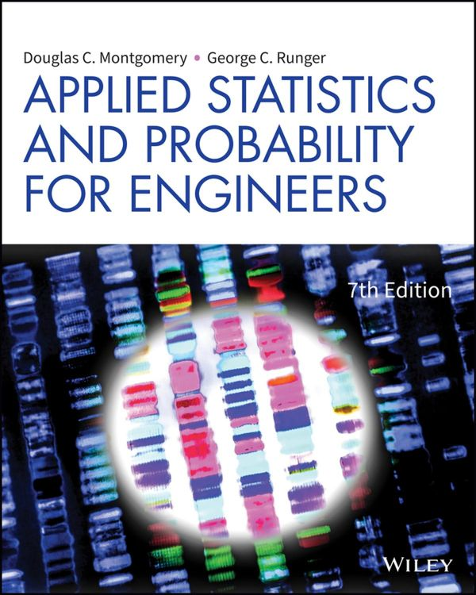
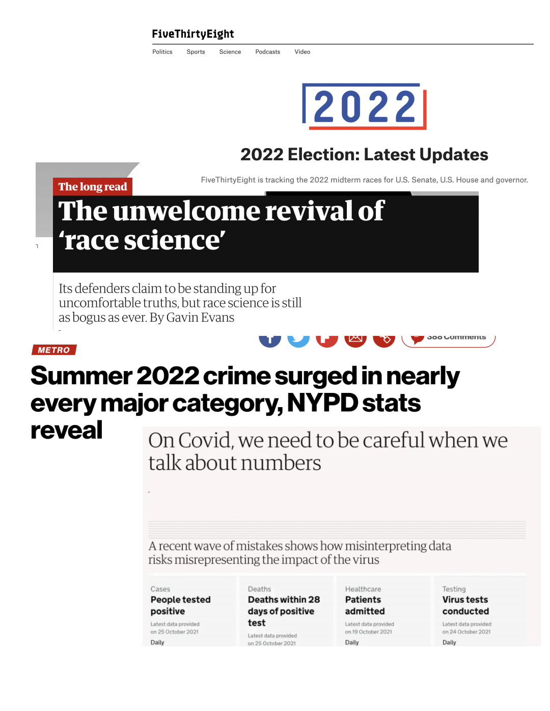
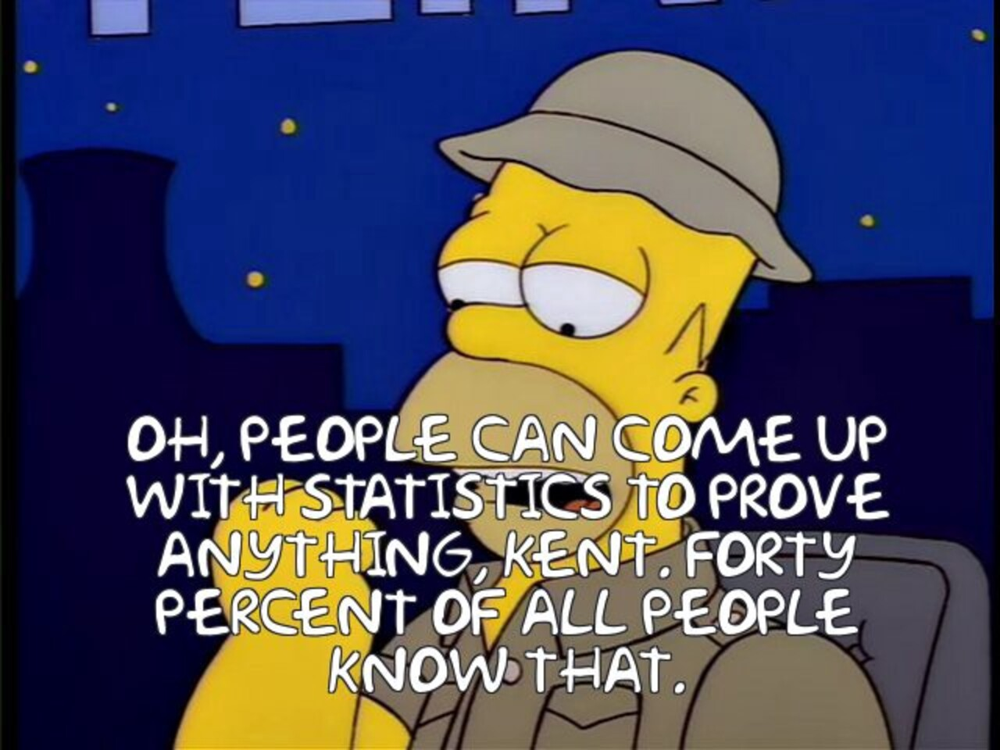
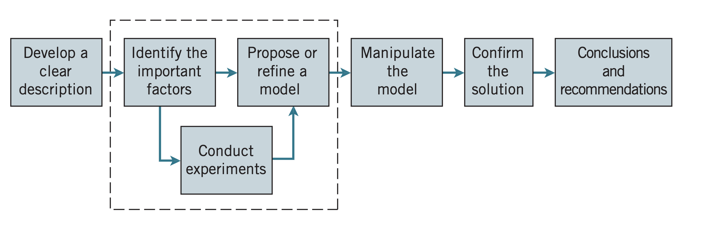
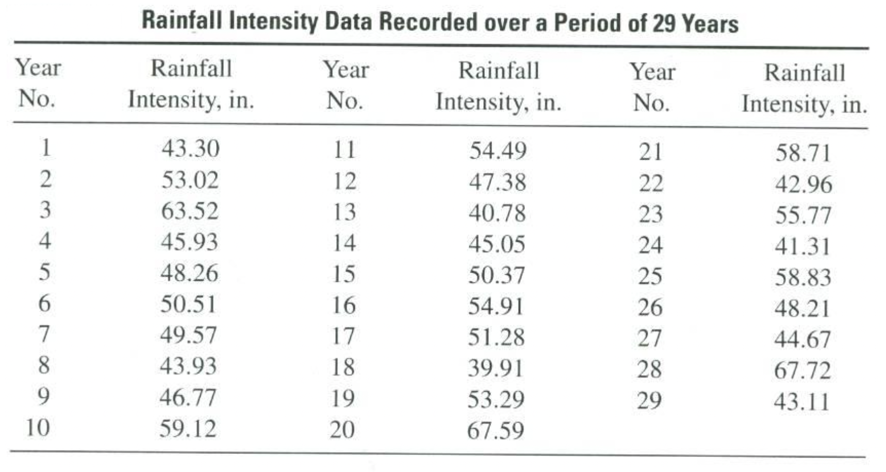
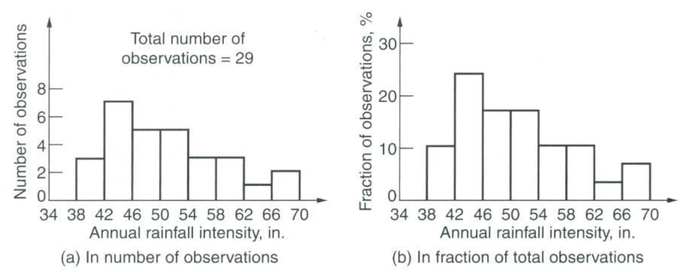
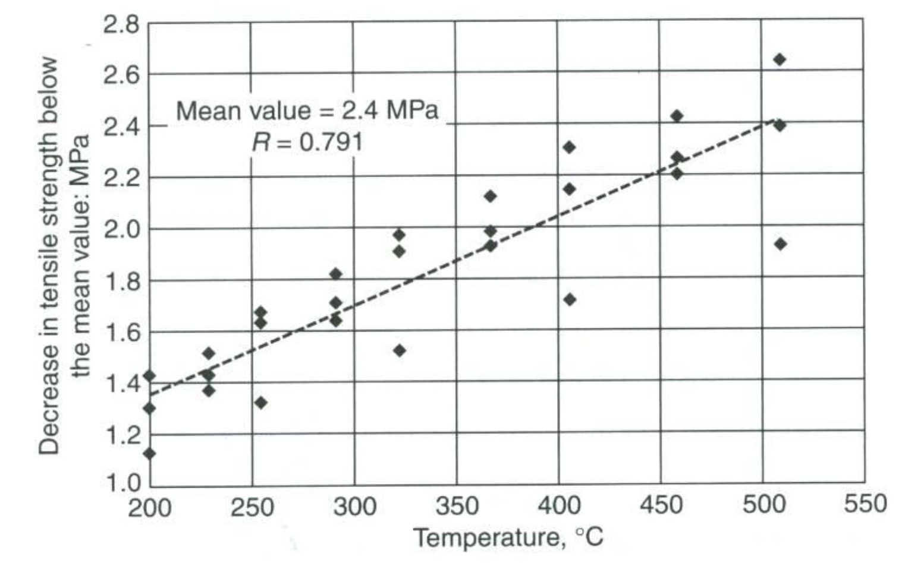
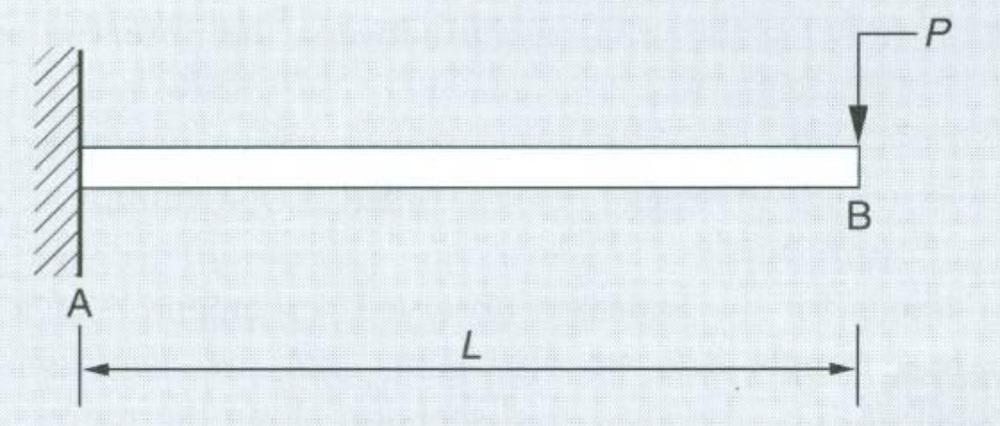
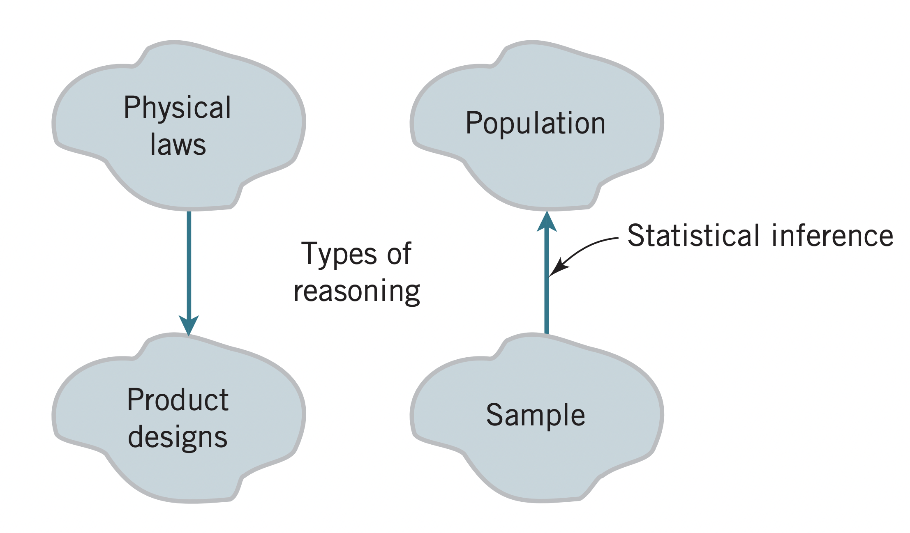

Probability & Statistics in Engineering
Fall 2022 - 6 Sep
Introductions
Logistics
- Office hours: Thu 10am-1pm
- TuTh 1-2:15pm
- Echo360 lecture recordings
- Supplemental Instruction: Julia Leventis
Grading
| Homework | 30% |
| Midterm | 30% |
| Final | 35% |
| Quizzes | 5% |
Textbook

D. Montgomery & G. Runger, Applied Probability and Statistics for Engineers, Wiley
and some additional notes on specific topics (e.g., Bayes' theorem)
Gradescope
- Disability Statement
http://www.umass.edu/disability/
- Inclusivity
https://engineering.umass.edu/about-us/inclusivity-statement
- Academic Honesty Policy Statement
Course objvectives
- Understand the fundamental concepts of probability (e.g., independence, expectation, density functions)
- Identify, apply and evaluate the proper probability model for different systems
- Utilize statistical methods to make inferences about systems from data
- Perform regression analyses, test hypotheses, and calculate confidence intervals for solving engineering problems
- Acquire a basic understanding of statistical inference and sampling theory
Schedule
| Week 1 | Statistics in engineering |
| Week 2 | Probability concepts |
| Week 3 | Discrete variables |
| Week 4 | Continuous variables |
| Week 5 | Probability distributions |
| Week 6 | Joint probability |
| Week 7 | Conditional probability |
| Week 8 | Central limit theorem; Midterm |
| Week 9 | Point estimation |
| Week 10 | Confidence intervals |
| Week 11 | Hypothesis testing |
| Week 12 | NO CLASS |
| Week 13 | Inference for two samples |
| Week 14 | Linear regression |


People can come up with statistics to prove anything. Forty percent of all people know that

Engineering method

What about uncertainty?
Uncertainty
- Randomness with the underlying process that is exhibited as variability
- Aleatory uncertainty
- Inherent in nature and cannot be reduced
- Imperfect or insufficient models of the process of interest
- Epistemic uncertainty
- Improved models or measurements could reduce it
Aleatory uncertainty
Variability - Randomness

Histograms

Joint variability

Epistemic uncertainty
- Predictions and analysis require models
- All models are wrong, but some are useful
- Reducible uncertainty as more knowledge is gained
Example

\[ \Delta_B = \dfrac{P L^3}{3 E I}\]
- Material is linearly elastic
- Beam remains plane under load \(P\)
- Support of the beam at point \(A\) is perfectly rigid
Decision making under uncertainty
- No single observation is representative of the system
- Evaluation or predictions are based on imperfect models
- Statistics allow us to describe the unavoidable uncertainty
- Make decisions based on trade offs (cost, benefit etc.)
Population and samples

- Mechanistic models
- Empirical models
- Statistical inference
- Probability models
Readings
- Section 1.1
- Section 1.2.1
- Sections 1.3-1.4